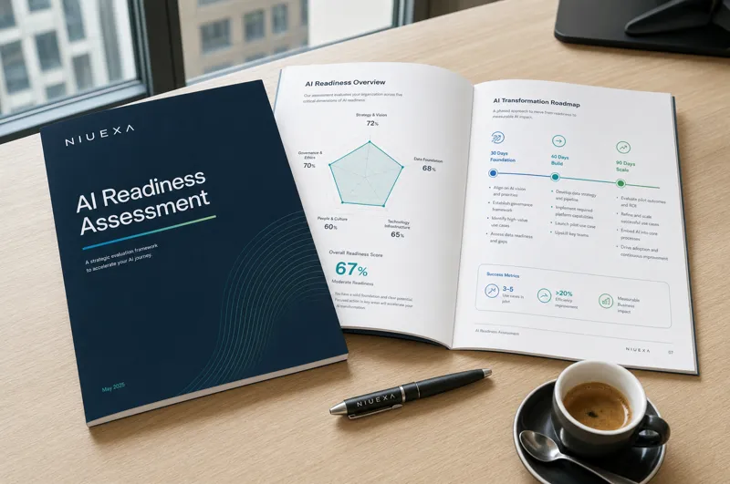

Processi
Workflow ripetitivi, input e output, colli di bottiglia, baseline di tempi e qualità.
Un assessment strutturato su processi, dati, competenze e governance che traduce l'interesse per l'intelligenza artificiale in una roadmap operativa: casi d'uso prioritari, impatto atteso e piano a 30, 60 e 90 giorni.
Il primo colloquio è gratuito e senza impegno. Per CEO, founder, operations manager e team che vogliono passare da esperimenti AI a priorità operative.


ChatGPT, Copilot, automazioni e AI agent producono valore solo quando entrano in un flusso di lavoro chiaro, con una metrica e un owner. L'assessment serve a evitare progetti casuali e a scegliere i casi d'uso dove l'AI può ridurre tempi, errori e colli di bottiglia.
Il framework che usiamo per capire se l'azienda è pronta a portare l'AI nei processi, non solo nei prompt. Sono le stesse cinque dimensioni che ritrovi valutate nel report finale.
Workflow ripetitivi, input e output, colli di bottiglia, baseline di tempi e qualità.
Accessibilità, qualità, ownership e documentazione delle fonti interne.
Uso reale dell'AI, formazione, responsabilità e capacità di verificare gli output.
Privacy, dati sensibili, escalation, controllo qualità e rischio operativo.
Metriche, quick win, priorità, effort e piano a 30, 60 e 90 giorni.
Un percorso lineare, dal primo contatto alla roadmap condivisa.
Gratuito e senza impegno: obiettivi, contesto e priorità della tua azienda.
Interviste ai referenti e mappatura di processi, dati e strumenti in uso.
Le cinque dimensioni valutate e i casi d'uso ordinati per impatto e fattibilità.
Piano a 30, 60 e 90 giorni e prossimi passi: formazione, automazioni o AI agent.
Nell'assessment usiamo un filtro operativo semplice: non chiediamo solo quale tool usare, ma quale workflow ha abbastanza volume, dati, regole e responsabilità per diventare un progetto AI sostenibile.
Quanto tempo, quante eccezioni e quali errori genera oggi il processo?
Quali passaggi sono ripetitivi, documentati e verificabili da una persona?
Dove servono controllo umano, privacy, escalation e metriche di qualità?
Approfondimento collegato: come portare l'AI dai chatbot isolati ai workflow operativi governati.
Non un documento teorico: una base concreta per decidere cosa fare nei prossimi 30, 60 e 90 giorni.

Niuexa è la business unit AI di Bebit S.r.l. (Milano). Affianca PMI italiane su formazione, automazione e AI agent, con clienti come Arredo3 e collaborazioni come quella con AUSED, la community italiana di CIO e IT manager.
Co-fondatore e CEO, Niuexa
Imprenditore e formatore, lavora sull'implementazione dell'AI generativa e dell'automazione nei processi aziendali.
Co-fondatore Niuexa, CEO Libera Brand Building Group
Oltre 25 anni di esperienza in strategia digitale e brand building per aziende italiane.
12 domande operative per valutare in autonomia processi, dati, competenze e governance prima di lanciare un progetto AI.
Scarica la checklist PDFCompila il modulo: ti ricontattiamo per fissare il primo colloquio, gratuito e senza impegno.
È una valutazione strutturata di processi, dati, competenze, governance e casi d'uso per capire dove l'AI può creare valore misurabile in azienda.
Perché l'AI genera ROI quando risolve un problema operativo chiaro. La scelta del modello o del tool viene dopo la priorità di business, i dati disponibili e la metrica di successo.
Una mappa delle opportunità AI, una shortlist di casi d'uso prioritari, rischi e governance da considerare e una roadmap iniziale per passare da idea a progetto operativo.
Il primo colloquio conoscitivo è gratuito e serve a definire contesto e priorità. Il percorso completo viene adattato in base a dimensione azienda, processi coinvolti e livello di dettaglio richiesto.
L'assessment identifica priorità e roadmap. Dopo, Niuexa può supportare formazione del team, AI Automation Roadmap o AI Agents Sprint per portare i casi d'uso in produzione.
No. Parte della valutazione è capire quali dati esistono, quali mancano e quali casi d'uso sono realistici nel breve periodo.
Il primo colloquio è gratuito. Ne esci con un'idea più chiara delle priorità, anche se poi decidi di fare da solo.
Richiedi l'assessmentUltimo aggiornamento: 10 luglio 2026